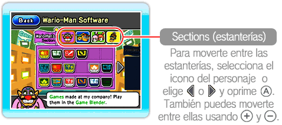
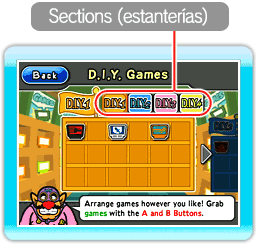
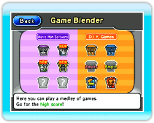
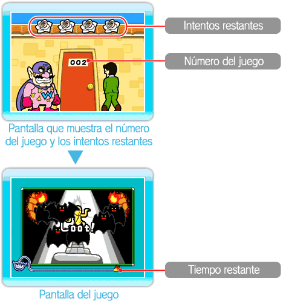

Puedes jugar en la sección Games (juegos) de Wario-Man Super Store (súper tienda de Wario-Man).

● Menú de juegos
Apunta a una de las tres opciones y oprime  .
.
·Wario-Man Software (software de Wario-Man)
Solo estarán disponibles los juegos incluidos en WarioWare: D.I.Y. Showcase que hayas jugado aleatoriamente en el Game Blender (licuadora de juegos).
Elige el juego que quieras y selecciona .

·D.I.Y. Games (juegos D.I.Y.)
Aquí se almacenarán los juegos que recibas en el Distribution Center (centro de distribución). Puedes jugar del mismo modo aquellos que están incluidos en la sección de Wario-Man Software. También puedes apuntar a un juego y oprimir +  para agarrarlo y moverlo a otra estantería o a un sitio distinto en la misma estantería. En la sección D.I.Y. Games puedes guardar un máximo de 72 juegos. Para borrar uno de ellos, elígelo y después selecciona .
para agarrarlo y moverlo a otra estantería o a un sitio distinto en la misma estantería. En la sección D.I.Y. Games puedes guardar un máximo de 72 juegos. Para borrar uno de ellos, elígelo y después selecciona .
Nota: No podrás recuperar los juegos que hayas borrado.
·Game Blender (licuadora de juegos)
Aquí podrás jugar a todos los juegos, incluso los incluidos con WarioWare: D.I.Y. Showcase y los que recibas a través del Distribution Center. Para jugar los juegos ya incluidos, elige Wario-Man Software (software de Wario-Man). Para jugar con los que recibas a través del Distribution Center, elige D.I.Y. Games (juegos de D.I.Y.).
Elige el icono de una fase, y luego oprime .
Nota: Los juegos de la sección Wario-Man Software que juegues aquí aparecerán en la estantería de Wario-Man Software y estarán disponibles para jugar cuando quieras.
Además, el Game Blender tiene muchos otros modos de juego, como se muestra abajo. Puedes desbloquear estos otros modos llenando todos los juegos en ciertas secciones de Wario-Man Software o consiguiendo un récord, etc.
Wario-Man
Shuffle |
Los juegos de la sección Wario-Man Software aparecerán de manera aleatoria.
|
Wario-Man
Ultra Hard! |
¡Los juegos de la sección Wario-Man Software aparecerán a una velocidad ultra rápida!
|
D.I.Y. Mix:
Shuffle |
¡Los juegos de todas las secciones de D.I.Y. aparecerán de forma aleatoria!
|
D.I.Y. Mix:
Ultra Hard! |
¡Los juegos de todas las secciones de D.I.Y. aparecerán a una velocidad ultra rápida!
|
Mix All:
Shuffle |
En esta sección aparecerán juegos de todas las secciones y de forma aleatoria.
|
Mix All:
Ultra Hard! |
¡En esta sección aparecerán juegos de todas las secciones a una velocidad ultra rápida!
|
Mix All:
Versus |
Hasta cuatro jugadores pueden competir (necesitarás controles de Wii Remote adicionales que se venden por separado). Cada jugador selecciona una posición de la pantalla, y cuando tu posición se ilumine, tendrás que ganar el juego. (Cuidado: ¡otros jugadores pueden controlar tu juego!) El juego terminará si pierdes cuatro veces. El jugador que quede al final, ganará. |
● Cómo jugar
Primero aparecerá el número de intentos restantes y el número del juego. Después, empezarás a jugar. Apunta al lugar correcto y oprime dentro del límite de tiempo. Si cometes un error o se acaba el tiempo, perderás un intento. El juego terminará cuando el número de intentos llegue a cero. El tiempo que tienes en cada juego viene indicado por la mecha de la bomba que aparece en la parte inferior de la pantalla.
Nota: Dependiendo de la estantería o el estilo de juego, el número de intentos, el número del juego y el aspecto de la pantalla en general pueden cambiar.

·Nivel del jefe
Una vez que hayas avanzado suficientes juegos, aparecerá un nivel del jefe. Si lo completas, el número de intentos restantes aumentará en uno.